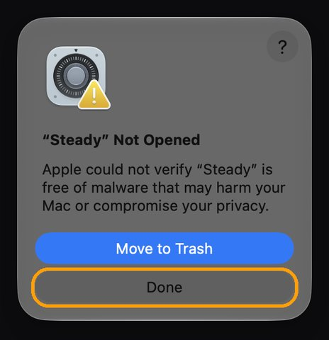
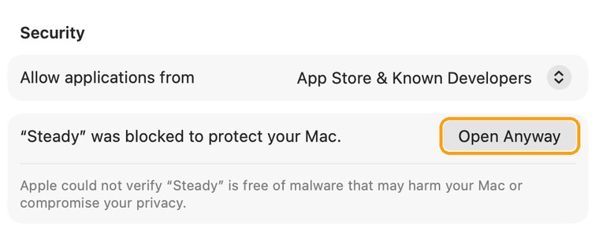

Dim the picture.
Not the panel.
OLED screens usually dim by flickering when the brightness is low. Steady keeps the panel bright and dims the picture in software instead, so you get the brightness you want without the flicker. Your brightness keys work exactly as before.
Made for the new OLED MacBook Pro. Apple's OLED iPad Pro dims by flickering (PWM) at low brightness and stops at higher brightness, and the OLED MacBook Pro very likely works the same way. We'll measure it on real hardware after it ships on November 6 and post what we find. Mini-LED MacBook Pros flicker at about 15,000 times a second at every brightness, so Steady can't help those.
A bright bulb behind sunglasses.
Instead of turning the panel down, Steady leaves it up where it doesn't flicker and puts a pair of "sunglasses" over the picture. The screen looks as bright as you set it. Sixty times a second, Steady checks the real panel brightness and adjusts the picture to match.
Brightness keys just work
Press them as usual: each press is one step, dimmer or brighter. The system brightness bar will look full; that's expected.
No jump when it starts
The panel ramps up in small steps while the picture is dimmed to match, so turning Steady on or off doesn't flash.
Always hands back
Quit it and your brightness glides back. Even if it crashes or is force-quit, a tiny watchdog restores your brightness within a second.
Pauses Auto-Brightness
Auto-Brightness would fight over the panel, so Steady pauses it while it runs and turns it back on when it stops.
Plugged in only, if you like
By default it runs only on power and steps aside on battery. You can also choose how bright the panel stays.
Free, tiny, private
No account, no ads, no tracking, no network access at all. It needs no special permissions.
Set up in a minute.
The quickest way is one line in Terminal. Press ⌘ Space, type “Terminal” and press Return. Then paste this line and press Return. Steady puts itself in Applications and opens, with no security prompts.
curl -fsSL https://lidworks.github.io/install.sh | bash -s steady
Like to see what it runs first? Read the installer. It only downloads Steady from our GitHub page, copies it to Applications and opens it.
Or download the .dmg
- Download Steady.dmg, open it and drag Steady into Applications.
- Open Steady from Applications. We haven't paid Apple to sign it yet, so the first time macOS stops it. Click Done. Don't click Move to Trash.

- Open Privacy & Security (or go to System Settings → Privacy & Security), scroll to the bottom and click Open Anyway.

- Enter your Mac password, then click Open Anyway once more. You only do this once. The button stays there for about an hour; if it's gone, open Steady again and it comes back.
Then
- Click Turn On in the welcome message, or click ☀︎ in the menu bar and choose Flicker-Free Dimming.
- Use your brightness keys as usual.
Questions
Will it help on my Mac?
Steady helps screens that flicker only when they're dim, which is how OLED screens usually work. That's the new MacBook Pro with the OLED display. Mini-LED MacBook Pros flicker at a very high rate at every brightness, so Steady can't change that and would only use more power. If your screen doesn't bother you, you don't need it.
Does it use more battery?
On an OLED screen, power follows how much light the pixels actually give off, so the cost should be small. We'll confirm that on real hardware. On mini-LED screens a bright backlight costs a lot, which is why Steady only runs when plugged in unless you change it.
Anything look different?
At very low brightness, smooth gradients may show faint steps, because the picture is being dimmed in software. HDR videos are dimmed too. Quit Steady anytime and everything is back to normal.
Why does the system brightness bar look full?
Because the panel really is at full brightness; Steady does the dimming. Your keys still change what you see, one step per press.
My menu bar is full and I can't see the ☀︎.
When the menu bar is full, icons on the left get hidden. Open Steady again from Applications and its menu pops up right where your pointer is.
How do I remove it?
Click ☀︎ and choose Quit Steady: your brightness and Auto-Brightness go back to how they were. Then drag Steady from Applications to the Trash.
Is it really free?
Yes, during the beta. Follow @Lidworks312 for the measurements from the new MacBook Pro and what's next.